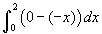
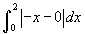
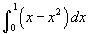
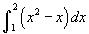
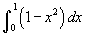
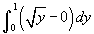
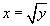

This device cannot display Java animations. The above is a substitute static image
The applet initially shows a line and the area (yellow) between this line and the x-axis from 0 to 2. We can think about finding this area using the limit of a Riemann sum, where each slice of the sum is a vertical rectangle.
which you can evaluate to get an area of 2. In the integrand, the 0 represents the lower curve, which in this example is just the
Select the second example from the drop down menu, showing a slightly different line. Note that the area is still positive, since what we care about in this case is unsigned area. We can find this using either

or

I generally like to think about the "top" curve minus the "bottom" curve, instead of using absolute value (although if I'm evaluating the integral numerically with my calculator, I tend to use the absolute value form).
3. Vertical slices of a cubic
Select the third example, showing a cubic with limits from -2 to 2. Notice that the area is positive, instead of 0. Also note that the exact area is 8, but rounding error in the software causes the displayed answer to be slightly short of this value. You can also move the a and b sliders to explore different limits.
4. Vertical slices between a line and parabola
Select the fourth example. This shows the area between a line and a parabola. Note that in the interval of interest, the line is "on top", so the integral (without absolute value) is

Think about the height of the gray rectangle. Its top is at
f (
x) =
x and its bottom is at
g(
x) =
x², so the integrand of this integral represents the height of the rectangle.
5. Vertical slices between a line and parabola - 2
Select the fifth example. This shows the area between the same two curves, but now the parabola is on top because the interval has changed. We could write this integral as

6. Vertical slices of a parabola
Select the sixth example, showing a parabola and a horizontal line other than the x axis. Here, the line is "on top" so the integral is

Horizontal slices
Select the seventh example. Here we repeat the previous example, but we use horizontal slices instead. Think of each slice as being dy tall and the length is then the difference between f (y) and g(y).
Hence the integral is

Move the
y slider to move the sample rectangle. In the previous example,
y =
x² so the inverse is

to draw the same curve (at least for positive
x and
y).
Explore
Select the eight example. You can try your own area example by setting f(x), g(x), a, and b. If you want to use horizontal slices, click the "inverse" check box and redefine your functions as functions of y
Other 'Applications of Integration' topics
(C) 2011 Copyright Math Open Reference.
All rights reserved